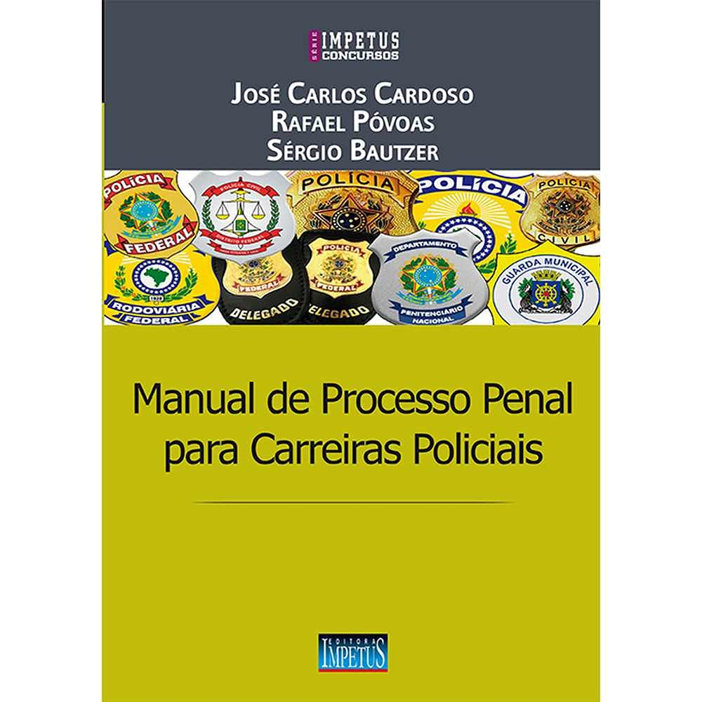
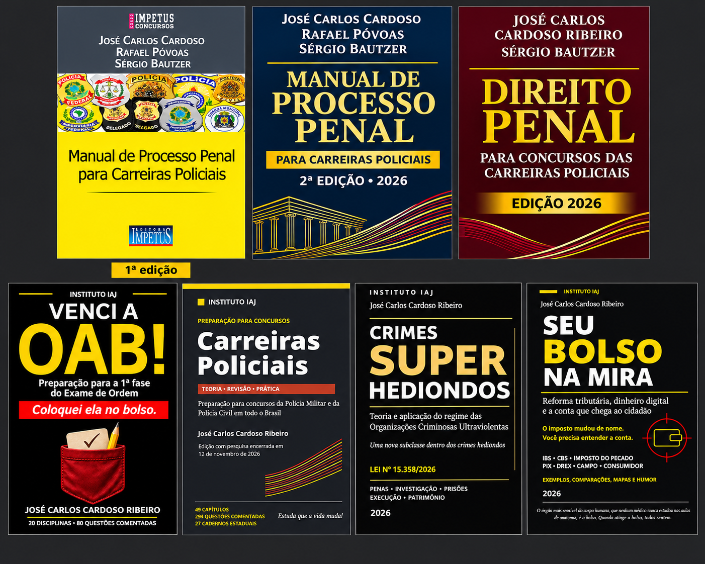

01
1ª edição
Manual de Processo Penal para Carreiras Policiais
Processo Penal e preparação para carreiras policiais.
Capa da primeira edição, com a identificação da Editora Impetus.

Estudo, ensino e reflexão jurídica em uma seleção de obras e edições sobre Processo Penal, Direito Penal, OAB, carreiras policiais e temas do cotidiano.
Uma trajetória que conecta a experiência na advocacia à sala de aula e à escrita.
As sete capas abaixo representam seis títulos, incluindo a primeira e a segunda edições do Manual de Processo Penal para Carreiras Policiais.

Os títulos, as indicações de edição e os coautores estão identificados conforme as capas desta seleção.
1ª edição
Processo Penal e preparação para carreiras policiais.
Capa da primeira edição, com a identificação da Editora Impetus.

2ª edição · 2026
Processo Penal e preparação para carreiras policiais.
Segunda edição apresentada na seleção de capas do autor.
Edição 2026
Direito Penal para o estudo direcionado a concursos das carreiras policiais.
Preparação para a 1ª fase do Exame de Ordem
Preparação para a primeira fase do Exame de Ordem.
“Coloquei ela no bolso.”
Teoria · Revisão · Prática
Preparação para concursos da Polícia Militar e da Polícia Civil.
Teoria e aplicação do regime das Organizações Criminosas Ultraviolentas
Estudo do regime das Organizações Criminosas Ultraviolentas, com abordagem teórica e aplicada.
“Uma nova subclasse dentro dos crimes hediondos.”
Reforma tributária, dinheiro digital e a conta que chega ao cidadão
Reforma tributária, dinheiro digital e seus reflexos no cotidiano, com linguagem acessível, exemplos e comparações.
“O imposto mudou de nome. Você precisa entender a conta.”
Para conhecer edições, formatos e disponibilidade, consulte o contato do autor.